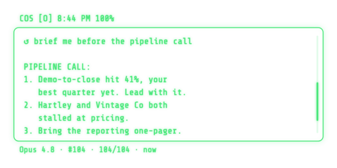
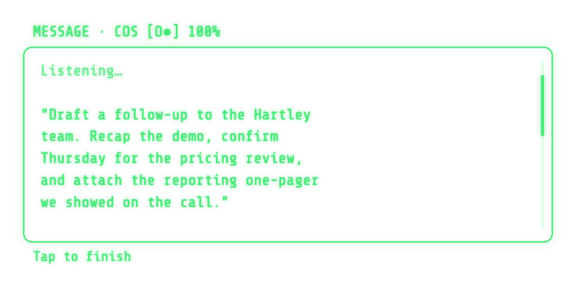
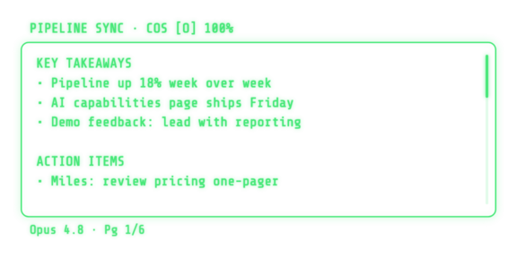
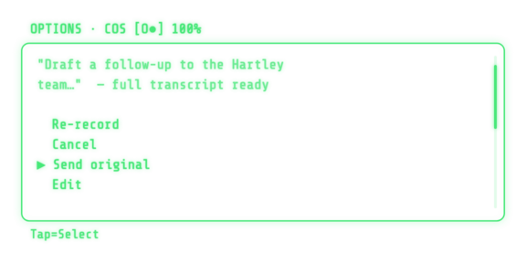

Brief me before the call.
How it works
Numbered, ranked, on the lens. Walk in already knowing the three things that matter, read straight from your meetings and tasks.
Three steps: run the server on your Mac, connect the app on your iPhone, say your first prompt. No decisions required up front — everything is tunable later.
node -v first; newer compatible major versions are fine, so do not install node@20 beside onenpm install -g @anthropic-ai/claude-code (never use sudo), then run claude and finish sign-in. Claude Code setup powers Opus, Fable, and Sonnet; Codex CLI powers GPT Frontier and GPT Balanced. Install both if you can: the server detects and uses whichever you have, and you can switch per query.brew install whisper-cpp once, then restart the COS server. This is required for local voice; text chat works without it.brew install python@3.12 ffmpeg espeak-ng. Python 3.11 or 3.12 is supported. The normal server start provisions Kokoro asynchronously; chat and transcription work while it prepares.Get the glasses live now; tune anything later in Settings. This setup is the same whether or not you already run a COS.
Prefer a menu bar app? Download COS Control for Mac for guided setup, launch at login, Doctor, safe updates, and rollback.
Keep the terminal open. The server prints your server URL (Tailscale and Wi-Fi addresses, labeled) and your API token — you'll paste those into the app in Step 2. The token is saved to ~/.cos-glasses/.env. For transcription, run brew install whisper-cpp. For optional local spoken replies on Apple silicon, run brew install python@3.12 ffmpeg espeak-ng; server 6.15.2 validates and self-repairs its pinned Kokoro environment.
brew install whisper-cpp, stop COS with Ctrl-C, and rerun the server command before tapping the mic./cos-glasses skill — ask it: "add the /cos-glasses skill from the Starter Kit." Then /cos-glasses starts the server, health-checks it, keeps it on the latest release, and troubleshoots connection issues for you. Grab it at skills/cos-glasses.md./glasses-day skill and your COS pulls the day's glasses questions and answers into your desk session — so anything you asked on the go becomes something you can act on. Grab it at skills/glasses-day.md.Want to tune model, context, and the lens? Make it yours below. Not technical? Have me set it up.
Nothing here blocks setup — the glasses run great on the defaults. Tune when you're ready; every pick renders a personalized checklist at the bottom.
Pick all that apply. Everything below tunes to your answer.
A soft default, not a commitment — every model stays available per query, by voice or from the toolbar. Opus, Fable, and Sonnet follow Claude Code; GPT Frontier and GPT Balanced follow the newest capable Codex generation automatically.
This grounds the COS so it knows your job. Lives in your config, never in the code.
Wire the sources you live in. We pre-select what fits your use cases. Adjust freely.
The server runs on your Mac. Your keys, your machine. Pick how voice is transcribed.
tts_local.ready in /api/health.ffmpeg on the Mac for normalized phone uploads, private answer-image galleries, and exact 288×144 G2 previews. Images never need a COS-hosted cloud.Your default layout. Adaptive switches it by context.
Make your picks above and your personalized setup appears here.
The app half installs from the Even Hub on your iPhone — covered in Step 2 of the setup above.
Want it done for you? Have me set it up.
npm install -g @anthropic-ai/claude-code without sudo, then run claude and finish sign-in. GPT Frontier/Balanced need Codex.brew install ffmpegRuns on your own Mac. Keep the terminal open while you use the glasses.
brew install whisper-cpp. Cloud fallback stays off unless the server operator explicitly enables it with COS_OPENAI_WHISPER_FALLBACK=1 and configures a key./cos-glasses skill so your agent starts the server, health-checks it, keeps it on the latest release, and troubleshoots for you — ask your COS to "add the /cos-glasses skill from the Starter Kit" (skills/cos-glasses.md).100.).npm install -g @anthropic-ai/claude-code on one line without sudo, then run claude and finish sign-in. Verify with claude --version.npm_config_cache="$HOME/.cos-glasses/npm-cache" npx --yes @gotcos/glasses-server@latest. Server 6.12.2+ does not run a second install inside npm's temporary cache.@latest launched an older version — compare /api/health with npm view @gotcos/glasses-server dist-tags.latest, then restart with npm_config_prefer_online=true npm_config_cache="$HOME/.cos-glasses/npm-cache" npx --yes @gotcos/glasses-server@latest.codex --version, then codex login.brew install whisper-cpp for free local transcription. Cloud fallback remains off unless an administrator sets both COS_OPENAI_WHISPER_FALLBACK=1 and OPENAI_API_KEY.brew install python@3.12 ffmpeg espeak-ng, restart COS, and allow first-run Kokoro provisioning to finish. Confirm tts_local.ready in /api/health. Explicit Local fails closed; choose OpenAI only if you intend to use your key.brew install ffmpeg, restart with npx --yes @gotcos/glasses-server@latest, and confirm Lens images is on before testing outside a meeting.npx --yes @gotcos/glasses-server@latest.Your Even G2, running as a chief of staff on the lens. The context you have already built, now it follows you off the screen.
No slide deck. No black box. You own it, you do not rent it.
[Priya] if we shift budget to the comparison pages we can hold CPA under target through July.
[You] Lock that in. Flag it in the recap as a decision.
[Marcus] I will have the brief ready Thursday morning.
[Priya] And let us pull the Q3 numbers first.

Numbered, ranked, on the lens. Walk in already knowing the three things that matter, read straight from your meetings and tasks.

Dictate a long prompt or reply by voice. Review the full transcript, edit it by voice, or re-record before a single word is sent.

Live, speaker-labeled transcription on the HUD. Takeaways and action items wait for you afterward, right from the glasses.
Dictate a long prompt or reply by voice. The transcription builds on the lens as you speak. Tap to finish and it submits, no phone, no keyboard.
Confirm, edit, or send with a tap. The HUD is there when you need it and gone when you do not. Never a phone, never a screen between you and the room.
